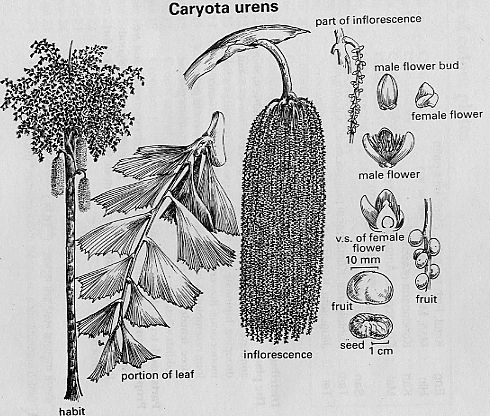

|
ECONOMICALLY
IMPORTANT PLANTS OF INDIA |
| Under-utilized Food and Fodder species and their wild relatives | Contributed by Ms.M.L Annapurna And Dr. Dhanapal, UAS, Bangalore |
Careyota urens (Rajani)

2,050m,
it is very common in evergreen forests of peninsular India. It occurs profusely
in Kerala.
Availability :
Status :
DIAGNOSTIC
FEATURES
A lofty, handsome palm, up to 22 m in height and
2.8m in girth; with a smooth, cylindrical, annulate trunk, Leaves 6-10 in a
crown, 6.0 m x 4.5 m, curved, bipinnate, primary divisions up to 1.8 m long,
pinnae borne on 18-25 secondary rachises, each bearing 36 pairs of leaflets, and
an odd terminal leaflet, arranged in a pyramid, petioles very stout, 30 cm x 4
cm, ashy green with shining surface; spathes boat-shaped, 30-45 cm long,
enclosing inflorescences; spadix very long, 3.0-3.6 cm, large, with 40-42,
sometimes up to 120 secondary branches on thick cylindrical primary axils,
hanging down, male flowers narrowly cylindric, light red, female generallylike
male, pale green; drupes 1-2 seeded, c 2 cm in diam; seeds with corrugated
surface, having hairs on the seed coat.
Breeding System :
Phenology :
Flowering in the palm starts during summer, and
continues through the year. The inflorescence first develops in the youngest
axils at the upper end and continues to develop in descending order, the
youngest and smallest being in the oldest axils. The palm continues to flower
till it is exhausted and dies.
Pollinators:
Insects.
Seed Biology :
Seed
Germination :
The
palm is propagated through seeds. The self sown seeds germinate in 150-180 days.
Presoaking the seeds in cold water for 24 hours ensures the maximum germination
in a minimum period.
Cultivation : Major Pests and Diseases:
Pests:Fungi,
such as Dothiorella caryotae Petrak & Syd., Macrophoma caryotae Syd. and
Phyllosticta cocos Cooke on leaves, Coniochaeta caryotae Rao on dead stems and
leaves have been reported. Insect
pests, viz. Lecanim signiferum Green, L. (Eucalymnatus) tessellatum Signoret and
Parlatoria cinnamomi
Rutherford feed on the leafsap; the larvae of Gangara thyrsis Fabr. and Psyche (Manatha)
albipe Moore defoUate the palms;
Nephantis serinopa Meyrick which
constructs a gallery of silk and excrement on the under surface of leaves, eats
the green matter and reduces the
leaf to a thin membrane. Several larvae and beetles of Plocaederus obesus Gahan,
Rhynchophorus ferruginous Olivier, Coccotrypes borassi Beeson, C. dactyliperda
Fabr., Xyleborus fornicatus Eichhoff and X. noxius Sampson bore the softer
portions of the crown and the stem, seeds, wood, and felled, fallen or dead
logs.
Diseases:
Parts used:
Trunk,
Leaves, Seeds.Fruits
Harvesting Practices
Produce and Products
Starch,
Sago, Sweet toddy, Palmgur or Jaggery ;
palmolates, arrack, vinegar ,
food-yeast.and Fibre.
An
analysis of the flour gave (per 100 g edible
portion): moisture, 12.2g; protein,0.2g; fat
0.2g; carbohydrates 87.1Kcal; minerals, 0.3 g; calcium, 10mg; phos
phorus10mg; iron1.3 mg; and energy, 351 K cal.
Sweet
toddy:
The
fresh sap contains sucrose up to
13.6 per cent and traces of reducing sugars 140mg
(per 100 g edible portion):
moisture 88.2g; protein 0.4g; carbohydrates 10.9g; minerals
0.5 g; phosphorus 140mg; iron
0.1 mg; and energy 45 K cal.
whereas fermented juice or toddy contains reducing sugars (1%), alcohol
(3.0-4.5%) and acetic acid (0.3%) (per 100 g edible
portion): moisture97.6g; protein 0.1g; fat 0.3, carbohydrates 18.9g;
minerals 0.2 g; energy 38 K cal.
Palmgur or Jaggery:
Analysis
of the jaggery gave: moisture, 9.20; protein, 2.13; total reducing sugars, 1.24;
total non-reducing sugar, 76.46; organic matter, 8.13; and ash, 6.4%; calcium,
210; phosphorus, 216; and iron, 6 mg/lOOg.The vitamins present per 100 g are:
thiamine, 13.1 u. g; riboflavin,
334 u.g; and niacin, 3.73 mg; vitamin Bi2 activity has also been reported.
Palm
leaf:
Analysis
of the palm leaf gave: dry matter, 38.8; crude
protein, 2.0; crude fibre, 9.3; N-free extr, 22.9; etherextr, 1.1; total
ash, 3.5; acid insoluble ash, 1.91; calcium,
0.35; and phosphorus, 0.23%.
(Chemical
composition of sago, sweet and fermented tody
ref: "Nutritive value of Indian foods" by C. Gopalan,
.B.V.Ramasastri & S. C.Balasubramanian Revised & Updated by B.S.
NarasingaRao, Y.G.Deosthale & K.C. Pant. 2000 .
NIN, ICMR, Hyderabad -500007: INDIA)
Starch:
The palm is felled before flowering during the rainy season when it is
dormant. The soft and starchy pith is separated cut into pieces
and pounded. These pieces are then mixed with water
and strained through cloth. The settled starch matter is
removed and dried. The yield of starch is high from
palms which are cut before flowering and which have
not been tapped for toddy, i.e. the same palm cannot be
used for sago and neera collection. The yield varies
between 100 and 150 kg per palm. The flour has a
peculiarly smooth and rubbery texture and is rather cold
to touch
Sago:
From the starch flour the sago is prepared.
Sweet
toddy
or Palm wine: The tapping consists of opening the spathe gently ; when
the spadix has attained the proper stage of maturity and exposing the tender
spadix. This is pressed and rubbed
from top to bottom twice a day for a month to prepare it for tapping. Then the
tip of the spadix is cut and
thence sliced thrice a day . . For collecting sweet
toddy, the pots should be cleaned and dried and coated
with lime or smoked before use. . For collecting sweet toddy, the pots
should be cleaned and dried and coated
with lime or smoked before use. The sap is collected in
pots suspended close to the spadix.
The yield of the sap varies
according to the vigour and age of the palm. More than one spadix per palm can be tapped upon at a time.
The pots are collected every morning just before sunrise.
The yield per day ranges from 4.5-15.0 litres to as much
as 21-23 litres. A single palm yields as much as 8,000 . litres per year.
The fresh sap is transparent and sweet but ferments
into a pale or cloudy, sour and intoxicating liquor (Tel. — Pullakallu)
within 8-9 hrs.
Jaggery
or Palmgur
The sweet sap is largely used for making palmgur or jaggery. It is strained into clay-.or
copper- pots and boiled over a slow fire. It is con- tinuously stirred and the froth is periodically removed.
.The boiling is continued till crystallization begins; it is
then allowed to cool for a few minutes and poured into .moulds to set. A
litre of the juice yields c 125 g jaggery.
The jaggery from the unfermented juice has good keep-ing-quality. It is
extensively used as sugarfood in Sri Lanka. The fermented juice is unsuitable
for jaggery- making. Such juice can be boiled down to a thick syrup
and preserved with sodium benzoate. The treacle so obtained is reported
to be superior to maple syrup (Acer saccharum
Linn.) for confectionery. When the syrup crystallizes,
a candy, known as PALMCANDY, is ob- tained which is used as a substitute for
jam. An alcoholic drink is
also distilled from the fermented juice. Other products obtained from the sweet
toddy are palmolates, arrack, vinegar and food-yeast.
Fibre:
The
chief use of the fibre, extensively used in India,is in the manufacture of
brushes, brooms, mattresses,baskets and bow-strings, hair-, cloth- and horse-
brushes, brushes for polishing linen and cotton-yam and for cleaning scutched flax and brushing velvets. It is also employed for sack-making and as a substitute for whalebone for stiffening corsets, etc. The fibres at the base of the leafstalks cause dermatitis. The wooly substance found at the bottom of leaves is occasionally employed for caulking boats.
Other Uses
The
stem is smooth, grey, annulate and cylindrical. The wood has an outer very hard
portion 5.9-7.5 cm in thickness; it is brown with close, black streaks,
silicious, strong (wt, 880-1120 kg/m3), durable and close-grained; the inner
portion is soft, reddish- white and pithy. For purposes of timber, the trees
should be
utilized after the last flowering. It is resistant to termite attack. It is
employed for hut-building and fenc ing, agricultural-implements, water-conduits,
rice- pounders, rafters, beams, drums, and spouting. It is suitable for
ornamental work and also for spikes in woodwork and for tool- handles. The outer
shell of the palm may be useful for fishing- rods and walking-sticks. The root
is hollowed out into buckets
The
fruits "or nuts, which vary in size from 1.2 to 2.5 cm in diam, are red to
black when ripe. Immature ones
are used to adulterate chopped arecanut. The nuts yield
a blackish red liquid when boiled with water and this
dye is used for coloring arecanut. They are acrid,
cooling and used to reduce thirst and fatigue. The fruits
contain tannins, 20% and total lipid, 1.1% . The tannins identified in
the pericarp of the fruit are: /- epicatechin, l --gallocatechin and
l-
epicatechingallate. The nuts are used for making buttons, beads, etc. The
fruits containg irritating, needle-like crystals; the pulp or juice is exter^nally
irritating and internally quite toxic, causing inflammation which lasts for
hours. The nuts are used as an application to the head in cases of hemicrania.
The
leaves are a favourite fodder of elephants, With regard to protein and
N-frce extracts, it resembles coconut leaf. The nutrients in palm leaf
are well digested by the elephants. The roots are arbonized to give a charcoal
preferred by silver- and goldsmiths.The inflorescence is used for decoration.
With
India — Raw Materials, II, 90; H Br Ind, VI, 422; Blatter, 339, PI. LVII,
Fig.48; Mahabale & Shirke, J Bombay not Hist Soc, 1967,64,462.